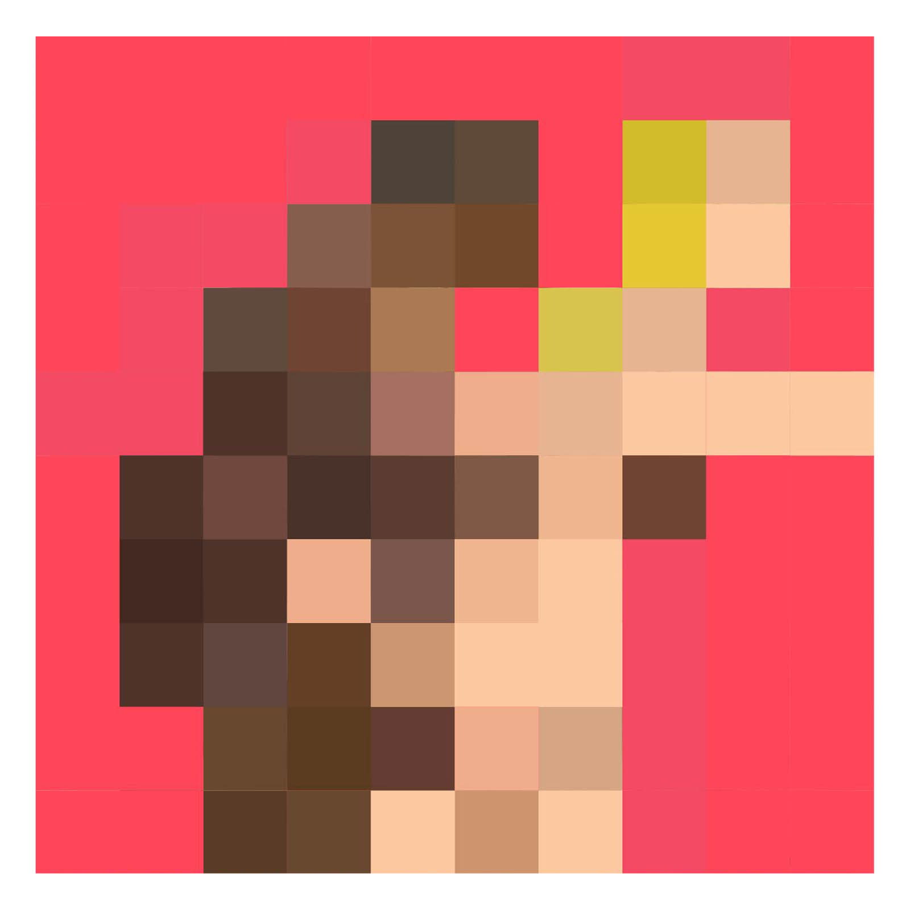

This project is the bare bones of my online website and portfolio. Titled: mother, is a inspiration of all ideas from the Net Art project in collaboration with my random thoughts. I had a lot of ideas looking at telepresence, black-net0art-actions, Rent a negro in particular. i decided to use elements and themes of both in mind, capturing mostly expression on the faces. The artwork in each page was created using a combination of illustrator and photoshop. I decided to adapt a little bit of every kind of art but to focus more on old and current subjects.
sitemap
home
2
3
4
5